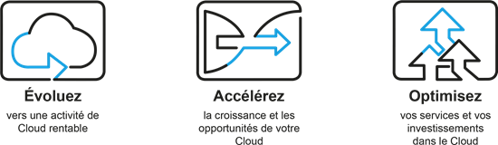

Faites évoluer votre entreprise vers le Cloud avec Arrow
Vous mettez en place une activité de Cloud ou vous souhaitez développer ou accélérer votre activité de Cloud existante et faire en sorte qu’elle soit plus rentable ? Arrow est là pour vous aider.
Grâce à sa large gamme de produits et à ses outils, son service d'assistance et son expertise adaptés, Arrow gomme toute complexité pour vous permettre de proposer une meilleure solution Cloud à vos clients.

Pourquoi s'associer avec Arrow ?
Arrow a réalisé des investissements considérables dans le Cloud afin que nous puissions vous aider à tirer parti des opportunités qu'offre le Cloud. Les dernières améliorations apportées à notre plateforme primée de services de Cloud, ArrowSphere, offrent une nouvelle expérience optimisée et enrichie à nos partenaires et à leurs clients.
Transformer l'ordinaire en extraordinaire
Quelle que soit l’étape à laquelle vous vous situez dans votre transition vers le Cloud, Arrow vous fournit les solutions et services dont vous avez besoin, et vous permet de développer votre entreprise et de rester très compétitif pour vos clients, en vous proposant notamment:
Devenez partenaire
En tant que partenaire Cloud d’Arrow, vous avez accès aux meilleures ressources commerciales, aux solutions et programmes de commercialisation, mais aussi à plateforme de services de Cloud ArrowSphere.
Pour en savoir plus sur les solutions de Cloud d’Arrow et pour découvrir comment nous pouvons vous aider à accélérer votre activité dans le Cloud, contactez-nous par téléphone au +212 (0) 5 22 52 92 60 ou par e-mail à l’adresse contact@arrowecs.ma